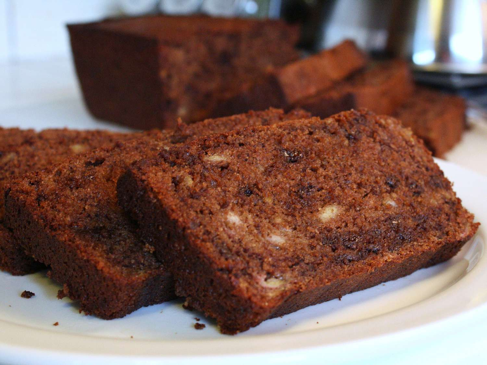

Making The Delecious Banana Chocolate Bread

Description
This is a delicious and moist banana bread that is perfect for dessert. It is loaded with chocolate chips and has a rich banana flavor that will leave you wanting more. This recipe is easy to make and is sure to be a hit with your family.
Ingredients
- 1 cup margarine, softened
- 2 cups white sugar
- 4 eggs
- 6 bananas, mashed
- 2 teaspoons vanilla extract
- 3 cups all-purpose flour
- 2 teaspoons baking soda
- ¼ cup unsweetened cocoa powder
- 1 cup lite sour cream
- 1 cup semisweet chocolate chip
Instructions
- Preheat oven to 350 degrees F(175 degrees C). Lightly grease two 9x5-inch loaf pans.
- In a large bowl, cream together margarine, sugar and eggs.
Stir in bananas and vanilla. Sift in flour, baking soda and cocoa; mix well.
Blend in sour cream and chocolate chips. Pour batter into prepared pans.
- Bake in preheated oven for 60 minutes, or until a toothpick inserted into center of a loaf comes out clean.
Let bread cool in pan for 10 minutes, then remove from pan and cool completely on a wire rack.
Slice and serve. Enjoy!
Back to Home